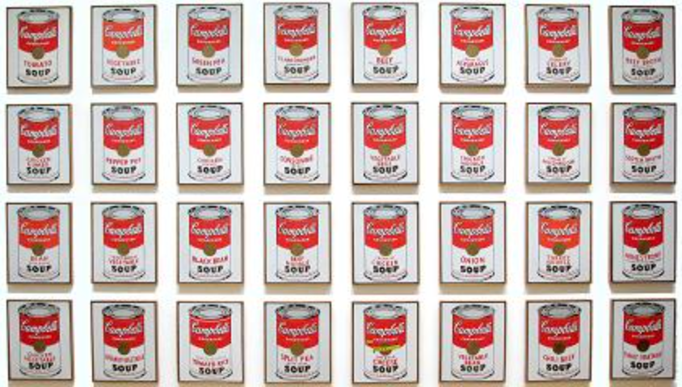
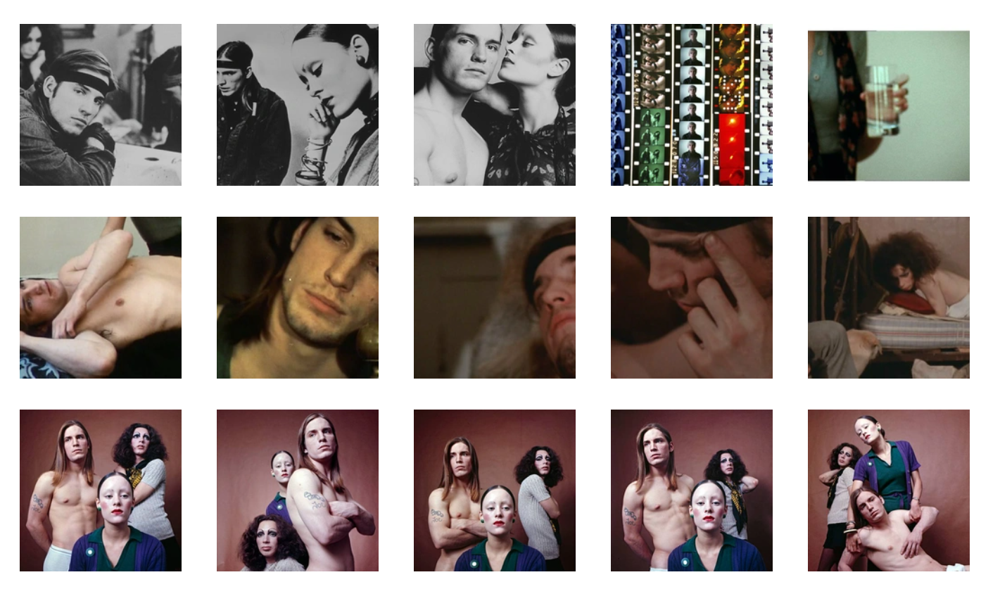

Middle Age
我有一些疑惑。我个人感觉拜占庭式比罗马式还要漂亮，但事实是，罗马式出现在拜占庭式之后，并且是中世纪建筑的辉煌之一。拜占庭式更多的是一种几何上、色彩上的调和，而且还有着中心与四周建筑的位置的呼应，罗马式遵循着古罗马那样镶嵌在一起的形式。罗马式外形简约，可以清晰得看到砖面层层相叠。内部多立柱，立柱也比较粗，有着大量圆拱相互穿插。如果说拜占庭式有着异域、东方的绮丽，罗马式就相对更具有基督教的庄重，而哥特式则走向了基督教的一个极端。尖锐、高耸入云，这些是我们常见到的形容词，事实上也形容得一点也不过分。一眼望去，哥特式建筑像林立的刀子，与周遭的环境格格不入。繁多的彩色窗户、精致富丽的外墙雕刻、椭圆到尖的拱、主体明显清晰，没有多余辅助建筑、视角也十分明确，只有一个正面可供观赏。哥特式建筑可以说非常尖刻地反映出了中世纪的宗教黑暗，空灵的圣歌、黑白的宗教衣装、十字架被这些座骇人的建筑笼罩，在内可以看到五彩的光的折射，一种神圣诡异之感油然而生。那个被基督教统治的时代，人们有无数种方式死去，如果不是这个时代的特殊性与极端性，我们也不会看到这样壮丽绝伦的建筑。哥特式建筑的拉长，是一种恐怖的严谨，也是一种宗教的观念。就像雕刻里面基督、国王们身体的拉长，有着浓烈的象征意味。

the Renaissance
Michelangelo

正是因为米开朗基罗雕塑的满满肌肉感，才体现出他对男性身体美的痴迷和执着。我们可以看到，昼夜晨暮四尊雕塑中，两位裸女都是健壮无比：晨有一排排腹肌，显眼的二头肌，面容棱角分明；夜的身体扭曲，身形虽较为阴柔，但胸部依然像是粘上去的，似乎原本是平坦的胸肌……。
我们能够看出，四座雕塑中，昼夜比晨昏更为复杂。昼背对着外面，露出一串脊椎骨，腿以很诡异的角度插到了前面，人体结构似乎已经不太合理了，扭头回看让人有一种窥视感；夜脚上踩着猫头鹰，提醒着身份，手臂处还有一个人头。这一切都给了观者很强的戏剧性和艺术感染力。这样强烈的张力、身形的扭曲，似乎在控诉一种悲愤的情绪，却又恰到好处地给人以统一、和谐、合理之感。1506年，拉奥孔在罗马出土，对米开朗基罗的深远的影响，在他其后的作品都可见一斑，他开始挑战视觉冲击性。对人体架构完美的了解，与桀骜不驯、善妒暴躁的性格，使得他成功创作出了一件件杰作，使得雕塑技艺终于在沉寂了千年之后重新回到发展的轨道。
以前在画室学画的那些年，对小卫已经不陌生，现在才知道他原来就是美第奇洛伦佐的弟弟，其实看到米开朗基罗的正宗小卫，我总会觉得他的脖子太长，转得太过（可能以前看的小卫都是单独的石膏头像……，没有正面身体），但这样的视角，恰好和他的手部动作、双腿关系形成平衡，又在呼应另一端的洛伦佐。他的发型、表情、姿态，无不彰显他的年轻。另一边的洛伦佐则更有领导者的深沉与智慧气质，也在回望小卫。昼夜虽一正一背，支起的腿却异常对称；晨暮更是如此。前面的两尊雕像的裸体，区别于三角上方的美第奇人物，昭告着身份的不同。稳固的金三角之间眼神的连结，使得这组群像各有特色却彼此统一。
想必向来情绪激烈的米开朗基罗此时是矛盾的。他本是个特立独行之人。他能接续古希腊的雕塑巅峰；他能以战前时刻、舍弃歌利亚、健壮青年的设定重新定义大卫；他能以指尖精神的传递来描绘亚当诞生的故事；他能虽接受了数年美第奇家族的支持，却仍然坚持自己共和的思想。也是因为这样，当他因立场身处危机，继续创作这组雕塑时，他内心忐忑。
然而他依然让这组作品无与伦比。正如他在嫉妒拉斐尔、面对常人难以想象的困难的同时，独立完成了他精美绝伦的天顶画那样。
罗曼罗兰在《米开朗基罗传》的序言中写道：“世界上只有一种真正的英雄主义，就是看清了生活的真相之后依然热爱它。”处在人生转折点上，处在时代转折点上，他仍然热爱。
17th century
Rembrandt & Caravaggio
我惊讶于伦勃朗对构图的突破和灵动大胆的笔触，以及他画中时常出现的，在衣服、饰品、金属上星星点点的跳跃高光。除却他最大特点：戏剧光之外，伦勃朗的着色方式似乎现代了不少。面部色彩并非过渡得一丝不苟，而是由红色、紫色、蓝色、黄色、棕色的笔触拼凑而来。他的构图也突破了古典主义的风格，这一点是与卡拉瓦乔不同的。
虽说惊讶，但卡拉瓦乔更能引起我的注意。下面说说看完卡拉瓦乔纪录片（The Soul and the Blood）的感受。
我好像在窥探一个孤僻而独特的灵魂。他自作主张地改了名；他性格暴躁好斗，喜欢拿着剑在外游荡；他受人妒忌，争议不断，却其实超越了当时的一切；他创造了自己独特的艺术哲学；他杀了人，一路逃亡。可能卓越的艺术家都具有某种必备的特质，这将他们推向一个极端。在热烈癫狂的笙歌中挥舞着匕首般的画笔，他是纵情的天才。
卡拉瓦乔把现实主义体现地淋漓尽致。当看到他的《圣母之死》的时候，我甚至怀疑他其实并非在绘制宗教题材，而只是挑了个漂亮坚硬的躯壳大肆宣扬自己的观点。原故事圣母之死的重点，在于圣母完成使命之后的新生。这是神圣的过程，是主动的过程（大概）。卡拉瓦乔却大胆地进行了魔改，像是本就不怀好意的断章取义，像是一个孩子在钻牛角尖。溺水浮肿的妓女尸体，黑暗的角落，一众的悲痛，这难道不是一个普通的死人场景？酒神、骗局、妓女、市井、暴力，他死脑筋一般，将身边的“丑”与“俗”，塑造成了一种“美”。当年那部夺走了《断背山》的奥斯卡的电影，《撞车》，将偏执、怀疑、丑陋蒙太奇地呈现在人们的视野中。最后，这样的欲念，脱胎于人性，善与恶，美与丑，都难以捉摸。 “身为一个注重价值的人，我懂得扮演出最后的画家，真正有价值的艺术家不仅要会画画，而且要懂得模仿自然。”自然，就是不加矫饰，最真实地呈现人性。在卡拉瓦乔的作品中，属于底层人的美，傲慢又狡猾地大放异彩。
卡拉瓦乔最著名的应该是光影控制。他的作品的对比度仍然是古典的处理方式，暗部像是直接拿黑色颜料抹上的。但显著的不同在于，光源单一明确，且方向更加灵活。比如（下左）这副的单向直光源，周遭没有被光打到，因此反光少得可怜。这种类似于戏剧的打光，确实带给了以后戏剧艺术很大的影响。这同时也让绘画更为自然简练，中心突出。（下右）拉斐尔的作品即使也是高对比度，但并没有那么明确的光源。


最后再谈谈我个人对他画作一些特点的发现吧。首先，卡拉瓦乔的静物非常精致。（上左）这张的玻璃瓶、（下左）《水果篮》，都是极致的细节描绘。这些葡萄、苹果就像真的一样。在这里，他同样沿袭文艺复兴时期的静物风格，并在效果上发展到了更为写实的程度。


其次，在观赏纪录片的时候，有个词语一直在我的脑海里叫嚣：千人一面。卡拉瓦乔笔下的少年，或者少女，好像都长着同一张脸。（上三图）圆脸，弯眉，葡萄眼。这种出现频率超高的娃娃脸一下子暴露了卡拉瓦乔的审美取向，有点类似于波提切利对女性面容的执着。第三，当卡拉瓦乔被指责绘画缺乏动感的时候，他用《美杜莎》（下左）的表情征服了反对者。仔细观察《美杜莎》，缝隙巨大、钢铁材质般的牙齿、红色的不自然的血液，他画作中的这两个元素给了我很深的印象。为什么他画的牙齿和血这么假呢？我会想。直到我突然意识到，可能因为这些元素没怎么被过去的人画过。以往的画作中，人物基本都是紧闭嘴巴（下《最后的晚餐》），（可能他们的牙齿不好吧）表情是靠眉头和嘴型传达，卡拉瓦乔却很聪明自如地绘制出张大的嘴巴，体现出不一样的情感和动感。而血液的绘制，可能来源于卡拉瓦乔对暴力美学的推崇吧。
纪录片中“卡拉瓦乔或许认为让真实的‘罪人‘伪装成圣人非常合适。”的论断颇具意味。这位天才是真性情，把自己画死在大卫手中的歌利亚头颅中，不断地冲击、不断地挑战，面对世人的言语，保持孤傲的灵魂。回头再看看纪录片的名字，“灵魂与血液”，形容他确实再合适不过了。
Modern Art
Paul Cézanne
个人认为，塞尚被称为现代艺术之父的原因在于他“使用了新的视角作画”。
这种新的视角，并非回避真实，相反，他非常注重体积与光影的真实；只不过，这种唯物的真实在某种程度上具有唯心的内核，是以他自身观看世界的方式作为依据。他忠实于自己的感受，并把自己的艺术思想毫无保留地体现于作品之中。
“他是第一位使用双眼作画的艺术家。”大卫·霍克尼说到。
以自然的双眼所见，糅合情绪与日积月累的观察信息，塞尚疯魔般执着于他的真实。
以初学者般稚拙的笔触，他将自然描摹成了几何物块。当我们看到锦绣山川、粉色云朵，留在视网膜之中的，汇合到大脑中的画面，已被我们自己去芜存菁，细节也不剩多少。我们收尽眼底的并非无数的细节，而是一个个由几何特质组合的朦胧画面，这亦是塞尚所见。
除了几何化，塞尚更著名的创新在于他的“双视角“。或者说”视角转换“、移动式透视、牺牲三维空间的视觉效果。在Les Grandes Baigneuses中，泳客们没有严谨的透视，扎在一堆。最前面的两位泳客一个横着蹲，一个背对观众，透视的错乱让她们显得一大一小，而非一远一近。这样的效果，是塞尚精心使用视角转换的结果。让人观赏之后，觉得诡异，但无可名状，这其实是双眼不同视角的自然成像。
这一点在Still life with kettle中体现地更是明显，在学习绘画的时候，老师总会很强调俯视角度中，上平下圆、近圆远平。而此处这一罐一壶，壶更近却更平，罐远却圆。这种诡异的透视方式，连同塞尚特有的初学者般的厚重生硬笔触，强烈地昭告着他的艺术观念，即用两只眼睛自然观看事物的我们，所得到的并不是一个单一视角的精确的画面信息，而是一个个和谐又矛盾、理智又理想的双视角几何团块，他们有着厚重的体积，由块面构成。
塞尚认为，旧有的艺术更多只是“技巧”的堆叠。他的作品正相反，是对技巧的有意识反叛。在这样对形式感的强调之中，塞尚打开了以客观世界为主体的现代主义之门。
Matisse & Picasso
我选择了马蒂斯和毕加索。其实几位艺术家我都看不懂，但还是找了两位很知名的艺术家，观赏了纪录片《毕加索的最后十年》、《毕加索的秘密》和《野兽派：亨利·马蒂斯》（全是生肉，好难啃啊）。其实本来还想看《毕加索：性爱与艺术》，但作业们和时间真的不允许了，打算日后有空看看。
其实现代艺术都给我一种哲学的感觉。这些作品都进行了抽象，每一笔都承载着一个艺术家的痛苦和沉思、狂喜与哀怜。是一串串的哲学符号，灵魂密码。我资历很浅，思考很浅，也没有浸润在那个时代之下，我的感受一文不值：
马蒂斯大概喜欢简明和鲜艳。他抛弃了繁琐的细节、调用明亮的颜色，他在做平面设计。在纪录片里，我好像看到了远古的图腾。热带蕨类植物、珊瑚、海星、原生动物、海螺、企鹅、菠萝、仙人掌（都我胡诌的）。概念式的拼贴，极尽想象之能事。这样鲜亮狂热的色彩，在宣告什么呢？马蒂斯虽然在细节上一减再减，进行平面抽象，但这种简必然面对的结果就是，剩下的每一个拐角，每一个圆，都成为了焦点。任何冗余都不被允许、任何缺位都显得别扭，极度大胆的色彩之下，浓烈燥热的情绪之中，是精益求精的天才的察觉。马蒂斯说：“我没有先入之见地运用颜色，色彩完全本能地向我涌来。“
他的平面、符号、色彩，脱胎于印象派，却又是反叛，没有经验、没有丈量，他的艺术踩过了科学。工业时代的繁荣没有剥离硝烟，而带来了异化的人。而马蒂斯的作品，是这样乱世之中的探戈。
我很久以前刷到过一个微博，大略地展现了毕加索一生的自画像。我被吓到了。他一生都在进行巨变。蓝色时期、玫瑰色时期、立体主义、格尔尼卡
…
“人们迫切地想知道兰波的脑子在想什么，在他写下《醉舟》这首诗的时候。”谁知道毕加索在想什么？他在解构自己的画作，解构人的脸和身体，解构客观世界，解构先前的艺术观念。他是全然实验性的：光轨摄影、黑人雕塑、一部拍完就把其中所作的画全部撕毁的电影。他的幽默、痛苦、才华、激进从来没有停止过，他把世界看得太穿，已经抵达纵深，迷途不返。如果要说其艺术思想产生的原因，可能会有很多人说是（万恶的）资本主义、现代化之类。但我个人觉得，就是毕加索自身的天才与情感。

看了维基百科，知道了杜尚从Nude Descending a Staircase到离开画布之间的转折点是在看了Max Stirner的哲学电影，The Ego and its Own。他观看后，感受到了“自我总是存在于任何事物之中”。（产生原因：“自我”哲学）
他的《泉》就是传达这样的想法吧。为什么我们会觉得日本料理比中华料理精致，因为日本料理的食材被精致地组合摆放。平时根本不起眼的、机械化量产的小便斗，被倒转过来，被写上一定有某种双关含义的署名，被放置在展台中，你走到它旁边，打量它。好像陶瓷都闪着光辉，好像它就是一件与生俱来的神奇创作。一切合理被以新的视角观看，被“自我”灌以独特的观念，艺术的界限已经模糊。
艺术是在展现一种美吗？怎样才算是美呢？当你珍视它，它是美的；当你忽视它，它就是小王子面前的五千朵玫瑰，都不是他的那一朵。

当杜尚还是在独特中展现美的时候，安迪·沃霍尔干脆解绑了“独特”和“美”的联系。他使用丝网版画来构建重复的影像，拥抱机械自动化与工商业逻辑。在媒体网布、高楼林立、电气轰鸣、信息爆炸的波普时代（产生原因），人们沉浸在即兴快感之中，半梦半醒着度过一生。人面对重复的物什，却仍能找到美感，会不会是在暗示一种极端的肤浅，以至于任何视觉残留与快感都转瞬即逝，下一秒就落入一模一样的陷阱之中。人们一万次捧红风格雷同的偶像，一万次沉浸于流水线生产的音乐，一万次在其中来回跳跃。快乐就在鲜明的色彩之中，物欲横流的社会中，有着源源不断的动力。这位艺术家对这种现象看得明白，却也不反感，他似乎也沉迷其中。这就好像当时很多人认为他是无性恋者一样，他爱恋性感的女性，性感的男性，但又仿佛置身事外。抓住大众的钱包和眼睛，他却不为之负责，玩弄于股掌间。
安迪·沃霍尔喜欢拍cult片。维基百科说，“很多影评者认为他不是一个真正意义上的导演（《帝国大厦》）；但是他对于摄影、电影以及导演的理念已经远远超越了那个时代，甚至领先了当代。”安迪·沃霍尔离我太近，我已经判断不了。好像他的作品确乎只是工业时代的废铜烂铁，意义就存在于无意义之中；好像他的作品又前卫到了隐喻一切的地步，是几百年之后的新新人类撰写（新）西方美术史才能做出的总结与归纳。《热》《渣》《肉》三部曲，注视裸露与卑贱、性与颓废。跟现在某些欧洲小众实验电影很相似，但比那些还要虚无与冗长。
“我一直希望拍一部纯粹关于性交的电影，没有任何其他的东西。就像《吃》就只是吃，《睡》就只是睡一样。所以我就拍了一部维瓦和路易斯·瓦登性交的电影，我称它为《干》。”观众在看，就只是看，导演在拍摄，就只是拍摄，全部的意义就是行为本身，一开始看会觉得生涩，逐渐就会被寡淡笼罩，兴奋变为麻木，兴奋与麻木混合一体。

图片太大了，有空改一下。
待更新，还有几篇没传上来。
To be continue…